Robust SVM¶
The robust SVM training problem can be expressed as a cone QP with second-order cone constraints:
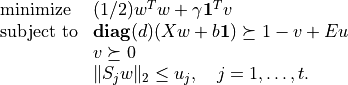
The variables are , 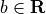, 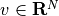, and 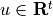. The matrix  has as its
rows the training examples
has as its
rows the training examples  and the vector 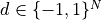 contains the training labels. The matrices 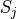 define the shape and the size of the uncertainty ellipsoids, and the matrix 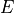 is a selector matrix with zeros and one ‘1’ per
row. 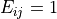 means that the i’th training vector is
associated with the j’th uncertainty ellipsoid. For 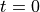, the
term 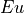 and the norm constraints are absent, and the problem
reduces to the standard linear SVM
and the vector 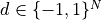 contains the training labels. The matrices 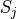 define the shape and the size of the uncertainty ellipsoids, and the matrix 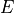 is a selector matrix with zeros and one ‘1’ per
row. 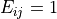 means that the i’th training vector is
associated with the j’th uncertainty ellipsoid. For 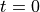, the
term 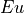 and the norm constraints are absent, and the problem
reduces to the standard linear SVM
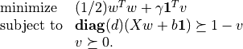
Documentation
A custom solver for the robust SVM problem is available as a Python
module robsvm.py. The module implements the following function:
robsvm(X, labels, gamma, P, e)¶Solves the ‘soft-margin’ robust SVM problem.
The first three input arguments are the data matrix
(with the
training examples
, and the positive parameter
. The fourth input argument P must be a Python list of matrices 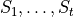. The last argument e is an
The function returns
,
,
,
, and the number of iterations (an integer).
Example
from robsvm import robsvm
from cvxopt import matrix, normal, uniform
# parameters
m, n = 60, 2
gamma = 10.0
# generate random problem data
X = 2.0*uniform(m,n)-1.0
d = matrix(1,(m,1))
# generate noisy labels
w0 = matrix([2.0,1.0])+normal(2,1); b0 = 0.4
z = 0.2*normal(m,1)
for i in range(m):
if (X[i,:]*w0)[0] + b0 < z[i]: d[i] = -1
# generate uncertainty ellipsoids
k = 2
P = [0.1*normal(4*n,n) for i in range(k)]
P = [ p.T*p for p in P]
e = matrix(0,(m,1))
for i in xrange(m):
if d[i] == -1: e[i] = 1
# solve SVM training problem
w, b, u, v, iterations = robsvm(X, d, gamma, P, e)